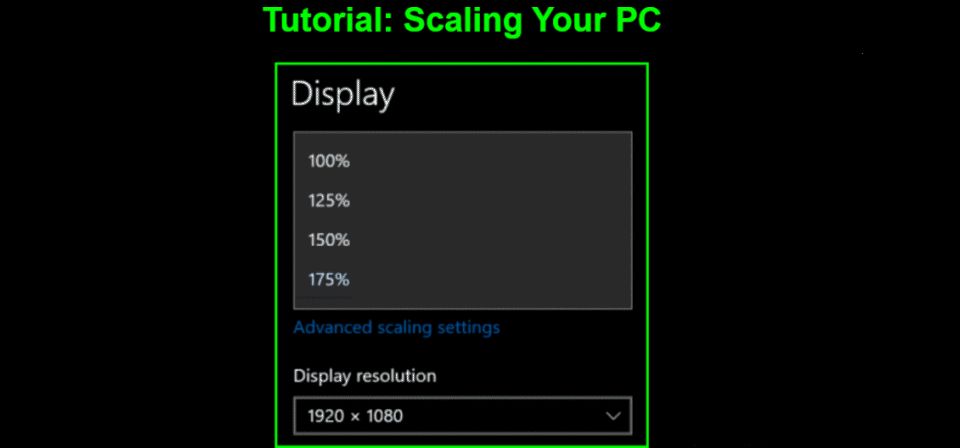
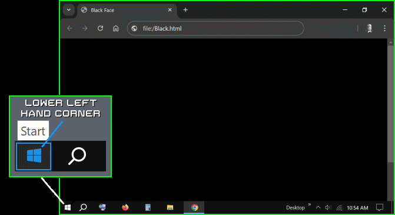
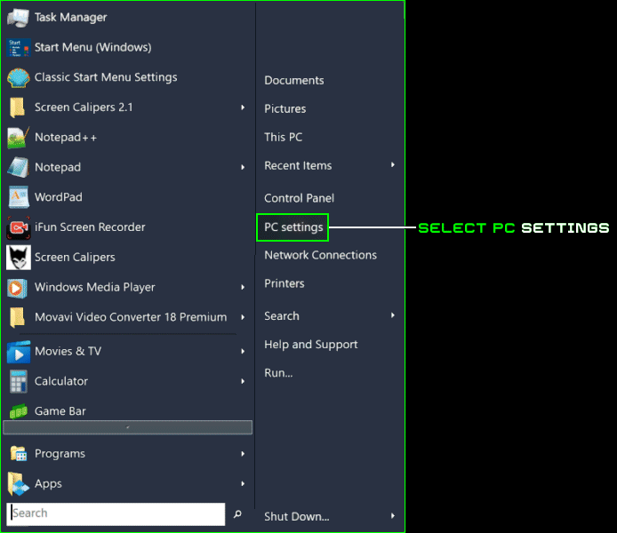
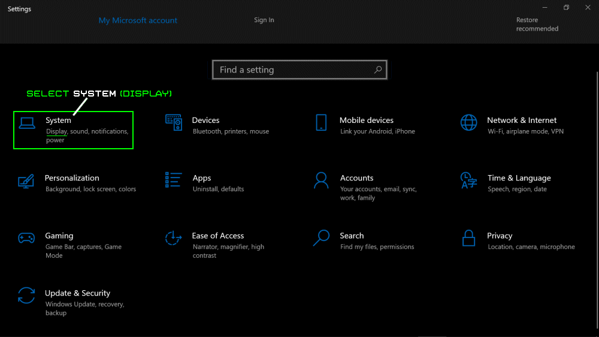
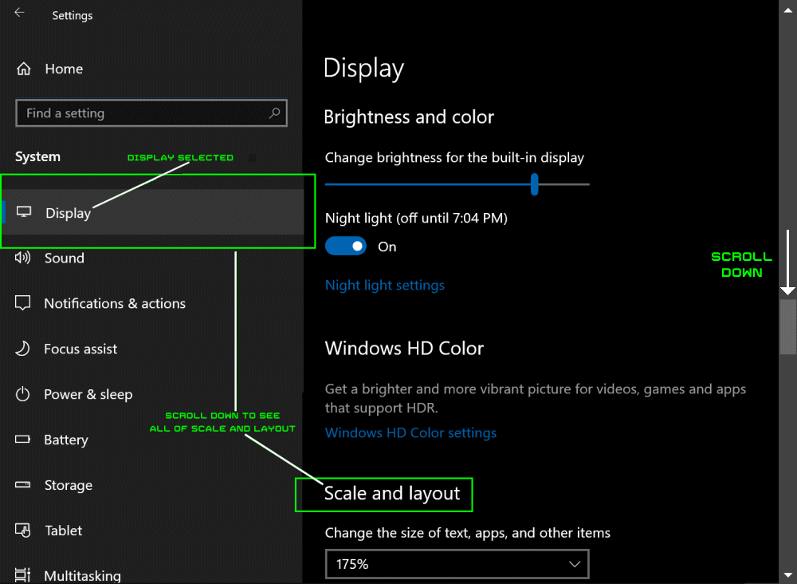
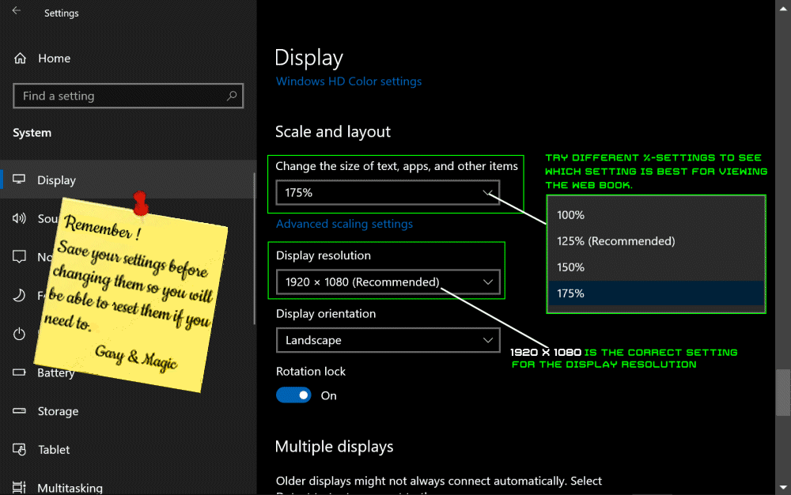
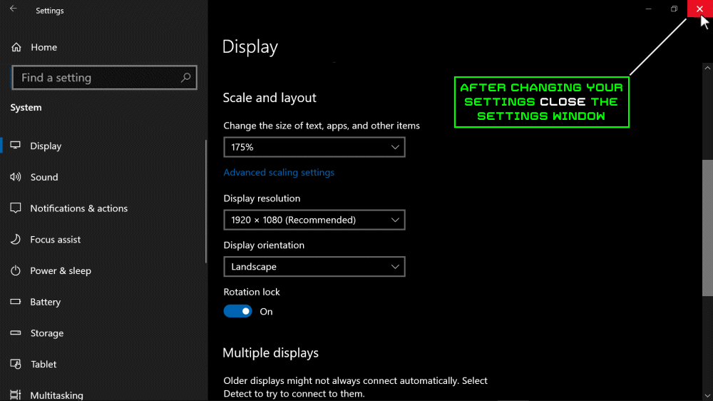

Since PCs come in a variety of screen sizes, not to mention Tablets and other hand-held devices,
you may have to reset your device's "Scale" size. In 6 easy Steps this tutorial will help you accomplish this.

 Select Windows Start Button
Select Windows Start Button


 Select PC Settings
Select PC Settings


 Select System (Display, sound, etc.)
Select System (Display, sound, etc.)


Scroll down to display Scale and Layout


Change your Scale & Resolution


Close Settings Page
